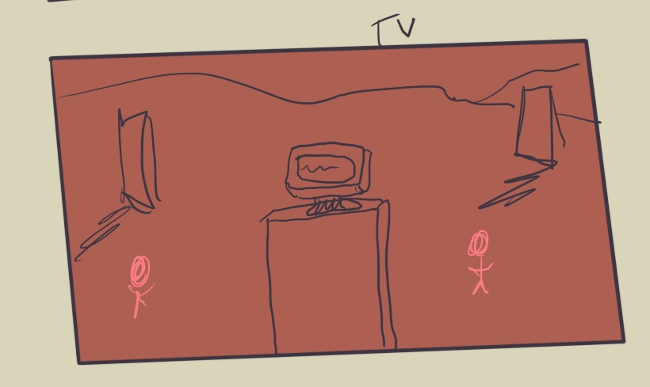

T-POSE: To Dance with One's Hands
Digital Art
T-POSE is an intervention at the meeting point of games, dance, and choreography. The work presents a critical and creative performance of the habitual, ritualized movements of video games. Beginning with various sets of stock animations for games (shooting, swinging a sword, punching, etc.), T-POSE then situates these movements in a continuously-developing, infinitely variable, ritualistic dance. The procedural, contingent nature of the dance allows for the creative ‘drift’ between the written score (the tropes and animations) and the ritualized performance which differs each time.
Shown at
- Hot Docs Cinema, 2025, Toronto ON
- Burnt Video Art and Experimental Film Festival 2021, Montreal, QC
- Museo de Arte Contemporaneo de Alicante (MACA), Alicante, Spain
What I did
- Design, conceptualization
- Unity, C#, modeling in Blender, texturing in Substance Painter
- Music in Logic Pro X
Nitty Gritty
- Year: 2020
- Material: custom code, Unity game engine
- Dimensions: HD / 16:9 / Stereo projection
- Duration: Infinite. Each ‘performance’ segment roughly 3-5 minutes